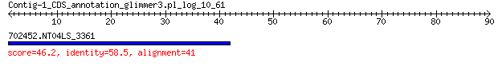

bitscore colors: <40, 40-50 , 50-80, 80-200, >200
 BLASTP 2.2.31+
Reference: Stephen F. Altschul, Thomas L. Madden, Alejandro A.
Schaffer, Jinghui Zhang, Zheng Zhang, Webb Miller, and David J.
Lipman (1997), "Gapped BLAST and PSI-BLAST: a new generation of
protein database search programs", Nucleic Acids Res. 25:3389-3402.
Reference for composition-based statistics: Alejandro A. Schaffer,
L. Aravind, Thomas L. Madden, Sergei Shavirin, John L. Spouge, Yuri
I. Wolf, Eugene V. Koonin, and Stephen F. Altschul (2001),
"Improving the accuracy of PSI-BLAST protein database searches with
composition-based statistics and other refinements", Nucleic Acids
Res. 29:2994-3005.
Database: eggnogv4.proteins.all.fa
14,875,530 sequences; 5,112,597,290 total letters
Query= Contig-1_CDS_annotation_glimmer3.pl_log_10_61
Length=89
Score E
Sequences producing significant alignments: (Bits) Value
702452.NT04LS_3361 46.2 2e-05
> 702452.NT04LS_3361
Length=41
Score = 46.2 bits (108), Expect = 2e-05, Method: Compositional matrix adjust.
Identities = 24/41 (59%), Positives = 28/41 (68%), Gaps = 0/41 (0%)
Query 1 VKSPGSTWEWHLRLVGWSLVEGGRIPCVAVKCVEMWRNTGG 41
+K+PG T E H +L WS E IP VAVKCV+MWRNT G
Sbjct 1 MKAPGLTGEGHWKLEDWSAEEESGIPRVAVKCVDMWRNTSG 41
Lambda K H a alpha
0.322 0.142 0.532 0.792 4.96
Gapped
Lambda K H a alpha sigma
0.267 0.0410 0.140 1.90 42.6 43.6
Effective search space used: 127048230600